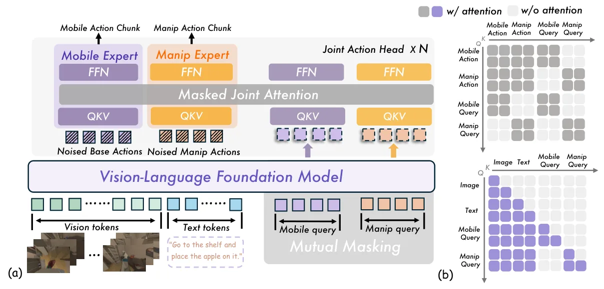
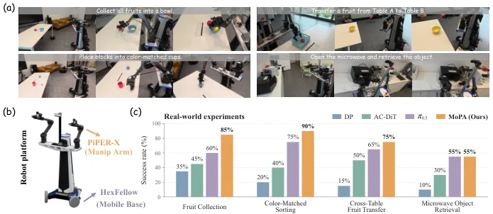
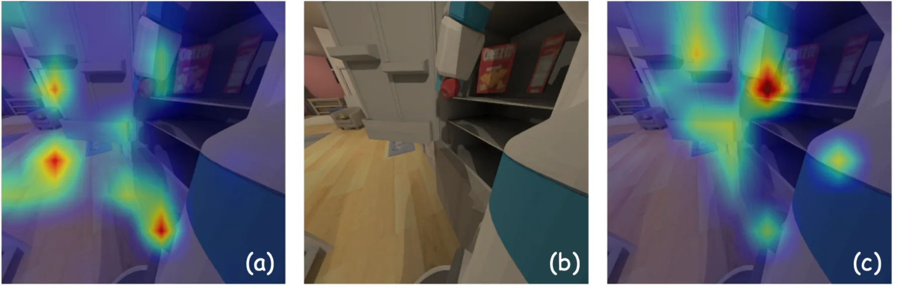
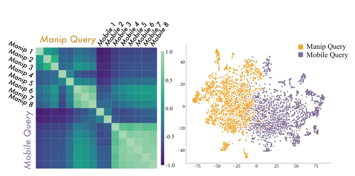

MoPA：通过子系统特定感知对齐实现协调移动操作MoPA: Coordinated Mobile Manipulation via Subsystem-Specific Perception Alignment
A 级 VLA/移动操作，直接连接空间感知、底盘-机械臂协调与动作生成。
一句话工作总结
论文把移动导航所需的场景级几何与操作所需的局部几何分开建模，同时在动作层保持耦合。对空间智能路线的价值在于：不同控制子系统不应被迫共享同一感知摘要，子系统特定的不确定性和证据通道值得进入状态估计。
半海报（待补全）
当前记录尚未达到完整海报质量门槛，暂不把摘要或评分理由冒充方法/实验结论。
待补字段：研究上下文.lineage（至少 2 条实质条目）、研究上下文.network（至少 2 条实质条目）。下一次任务需从论文全文或官方 HTML 提取证据后再发布。
摘要
MoPA 为移动底盘与机械臂分别建立感知 query bank，并在结构化 Mixture-of-Transformers 解码器中进行 Perception2Action 对齐，再用耦合条件 flow matching 联合生成两类动作 chunk。论文在 ManiSkill-HAB 三个任务套件和四个真实任务上验证了协调性。
Mobile manipulation requires perceptual evidence at different spatial scales for base motion and arm control, while the two action modalities remain kinematically coupled. Existing policies often employ specialized action generation for different subsystems but condition heterogeneous action branches on a shared perceptual representation, leaving subsystem-specific perception-action correspondence implicit. We present MoPA, a framework that aligns perceptual conditioning with mobility and manipulation while preserving coordination at the action level. Dual Perceptual Streams employ two mutually masked query banks to extract separate perceptual representations from a shared vision-language context. Perception2Action Adaptation jointly updates each query bank and its corresponding action stream at every layer of a structured Mixture-of-Transformers decoder, while enabling information exchange between the two action streams. Coupled conditional flow matching learns a joint vector field for coordinated generation of both action chunks. On the ManiSkill-HAB benchmark, MoPA achieves state-of-the-art performance across all three task suites. Across four real-world tasks, MoPA achieves a mean full-task success rate of 76.3%, outperforming the best baseline by 12.5 percentage points. Ablation studies and further analyses validate the effectiveness of the proposed design. Website is available at: https://mopa-policy.github.io/.
图表/页面预览

{kind=link}

{kind=link}

{kind=link}

{kind=link}
